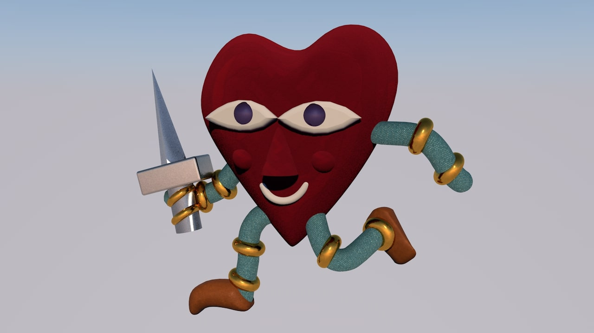
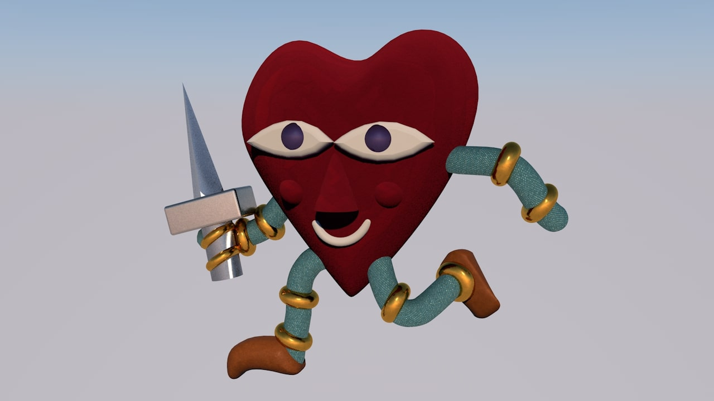

A variety of 3D renders.
I've chosen to add 3D modelling to my skillset by learning how to work with Maxon's Cinema 4D software.
I'm showcasing 3D compositions that each depict their own visual style. I like to use 3D to create windows to imaginative worlds, with their own unique atmosphere.
The heart creature model is based on this 2D design by Jasper van Gestel.
The dog renders are also based on one of his 2D designs.
3D conversions based on existing 2D illustrations poses its own unique challenges. You have to imagine what a flat illustration would look like in 3D, while maintaining the original art's sensibilities. I'm pleased with how these conversions turned out.